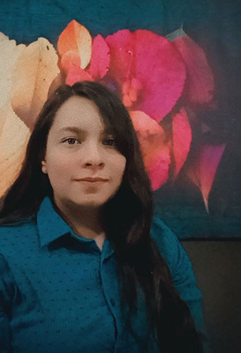

¿Qué estudio?
Estudio la licenciatura de diseño gráfico en la Benemérita Universidad Autónoma de Puebla, estoy cursando los últimos semestres de la carrera y pronto la finalizaré. Tengo diferentes objetivos de rendimiento en el área profesional como capacitarme en diferentes áreas de diseño gráfico, perfeccionar mis habilidades de diseño y tomar diferentes cursos y diplomados para seguir sumando experiencia.
Semblanza actual de las adicciones en el diseño gráfico
Reconocimiento por haber participado en el concurso de fotografía llamado "Semblanza actual de las adicciones en el diseño gráfico" en el año 2019 en Puebla Pue.
Sobre el muerto las coronas
Reconocimiento por haber participado en el concurso de diseño del proyecto llamado "Sobre el muerto las coronas" en el año 2019 en Puebla Pue.
Ctrl + E
Reconocimiento por haber asistido a la conferencia llamada "Ctrl + E" que habló de temas relacionados a la ilustración, cartel y diseño editorial" en el año 2018 en Puebla Pue.